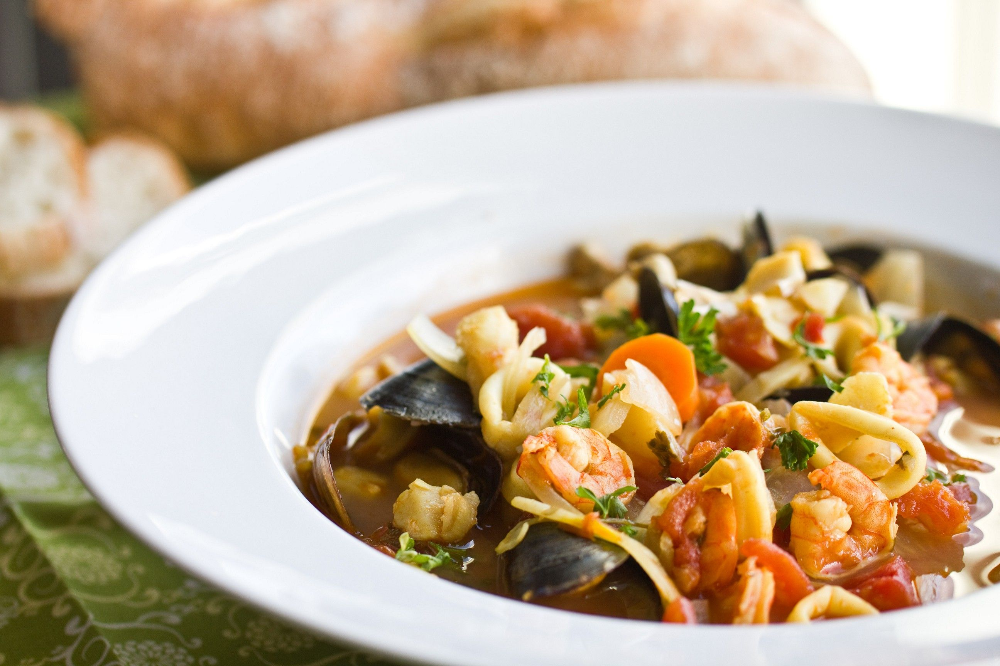

Make it at Home
Ingredients:
- 4 x 200g small monkfish tails
- 4 x 300g gurnard
- 4 x 300g John Dory
- 2 x 500g cooked lobsters
- 150ml olive oil
- 1 medium onion, chopped
- 1/2 leek, cleaned and sliced
- 3 medium-sized carrots, peeled and finely chopped
- 1/2small bulb of fennel, finely chopped
-
- A pinch of crushed dried chillies
- 1kg conger eel or pollack, skinned and cut into small chunks
- 100g tomato purée
- 100ml dry white wine
- 1 bouquet garni
- 4-5 cloves garlic, coarsely chopped
- 1/2 tsp saffron strands
- 1/2 tsp mild curry powder
- salt, freshly ground black pepper, cayenne pepper to season
Bouillabaise

- First prepare all the fish. Skin the monkfish tails and remove the fillets, and fillet the gurnard and John Dory. Break off the legs and claws of the lobsters and set aside the thinner legs for the stock. Crack the shells of the claws with the back of a knife and break at the joints into smaller pieces. Cut the rest of the lobster in half lengthways, detach the head from the tail and cut each tailpiece across into three evenly sized pieces. Put the fish fillets and lobster pieces onto a tray, cover with clingfilm and keep chilled until needed.
- Now make a fish stock by putting the fish bones, lobster legs and 2.25 litres of water into a large pan. Bring to the boil and leave to simmer gently, uncovered, for 20 minutes, then strain into a clean pan. You should have about 2 litres. If not, make up with a little water. Set aside.
- For the soup, heat the oil in a large pan. Add the vegetables and crushed dried chillies and cook gently for 20 minutes until soft but not coloured. Add the conger eel or pollack and fry briskly with the vegetables for 3-4 minutes. Add the tomato purée, white wine and fish stock. Bring to the boil, add the bouquet garni, garlic, saffron, curry powder and a pinch of cayenne pepper and leave to simmer very gently, uncovered, for 1 hour.
- Pre-heat the oven to 150°C / gas mark 3. Pass the soup through a sieve into a clean pan, pressing as much of the liquid through the sieve as you can with the back of a ladle. Return the soup to a wide-based, shallow, clean pan, season to taste with salt, pepper and cayenne pepper, and bring back to simmer. Add the monkfish fillets and cook for 1 minute. Then add the gurnard and John Dory fillets and the pieces of lobster, making sure that they are fully submerged in the soup, and simmer for a further 2 minutes. The fish will still be slightly undercooked at this point.
- Carefully lift the fish fillets and lobster pieces out of the soup onto a warmed serving plate, ladle over a small amount of the soup, cover with foil and put into the oven to keep warm, but don’t leave any more than 10 minutes. Ladle the soup into warm soup plates and serve as a first course. Then serve the fish as a main course